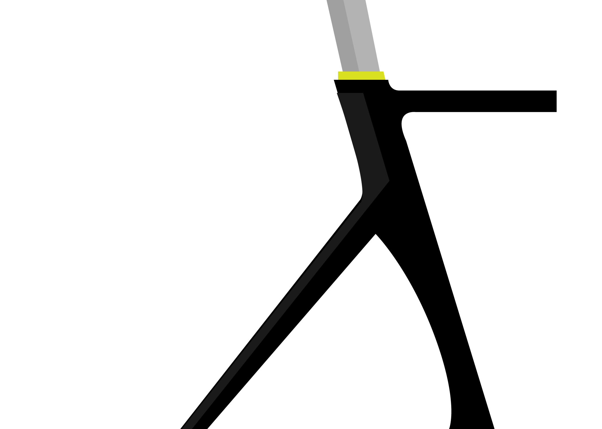
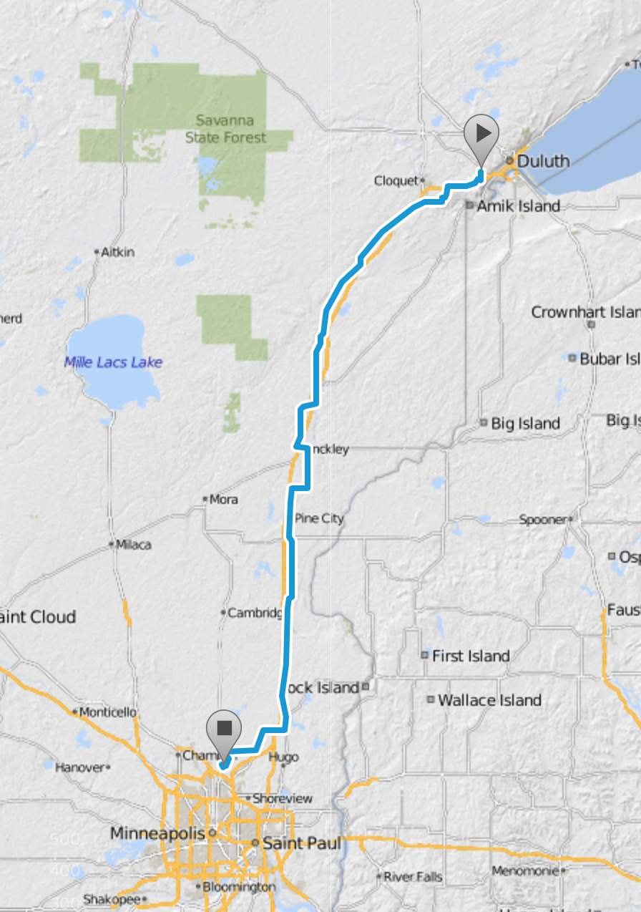

Bike MS is more than a ride. It's an experience grounded in camaraderie and marked by passion, inspiration, determination, and pure enjoyment. It will be an experience you'll never forget, shared with new friends and old.

When? | June 9-11, 2017
Start/Finish Location | Proctor High School to Century College
Bike MS: C.H. Robinson MS 150 is a two-day cycling journey that will take you farther than you've ever gone before. What makes this ride so special? More than 3,000 cyclists travel 150 miles from Duluth to the Twin Cities for one cause: a world free of MS. It's fun. It's challenging. It's the best weekend ride in Minnesota - hands down.